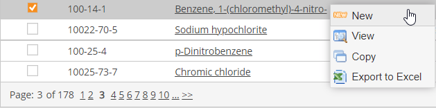
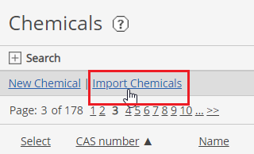
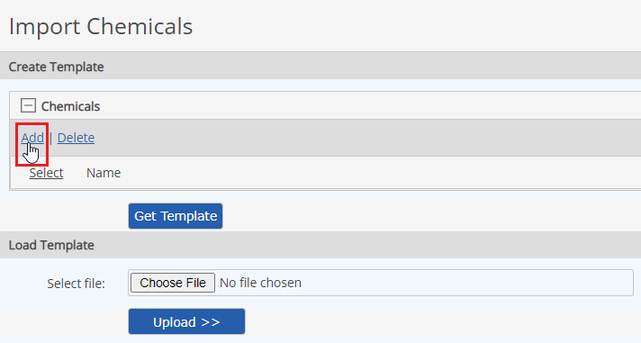
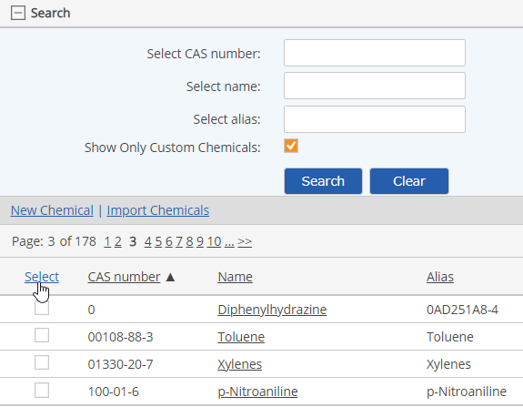
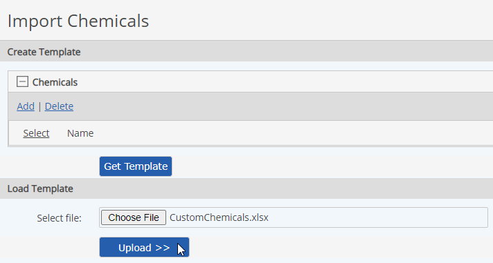

Custom chemicals may be exported to an Excel file. When you export custom chemicals to Excel, you can then:
Chemicals may be exported singly or in bulk.
To export a single chemical to Excel:
In the Chemicals library, select a chemical, right click and choose Export to Excel.

Choose a file name and a location and Save.
Open the file in Excel and edit it as necessary.
You can add new custom chemicals to the file by copying the rows for an existing chemical in the existing file, then renaming it and editing the values as necessary.
To export multiple custom chemicals:
In the Chemicals library, select Import Chemicals.

In the Create Template section, click Add.

In the selection window, select the chemicals to add to the template file and click Select Chemicals.
To select all custom chemicals for export, expand the Search pane and check Show Only Custom Chemicals for the search. You can then select all, or only those chemicals desired.

Click Get Template.
Choose a name and a location to save the file.
You can open the file in Excel and edit chemical properties if desired.
You can add also new custom chemicals and define their properties by copying existing rows and editing. During import, new chemicals will be created in the system and existing chemicals updated.
Boolean field values must be TRUE or FALSE.
To import chemicals from an Excel file:
Click Upload.

The upload validation appears. Any problems with the import file will be noted in the Errors and Warnings. If problems are found, you can return to the upload page after fixing the problems.
If validation is successful, click Run Upload.